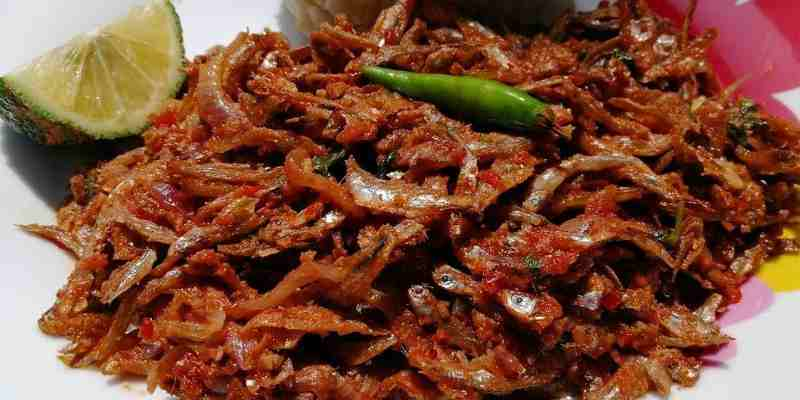

Omena Recipe

Omena
Omena is a very common dish in keny mainly in the lake region.
It is very delicious meal and can be cooked in several ways.
Today we will be looking at how we can cook fried omena
- 1/2kg of omena
- 20ml of oil
- hot water
- onions
- 2 tomatoes
- 1/3 teaspoon of salt
Steps
- wash your omena with a hot water and let it dry
- pour the oil in a sufuria and heat for 20seconds
- add your omena to the heated oil and lower the heat
- turn your omena frequently so that all of it is cooked
- continue frying it in the oil
- cut the onions and it and continue turning the omena with the oil
- cut the tomatoes and continue turning
- add salt and let the omena cook for about 5 minutes
- serve with a hot ugali